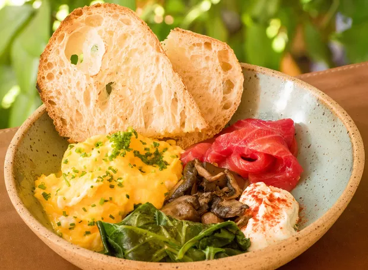
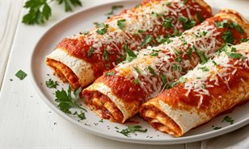
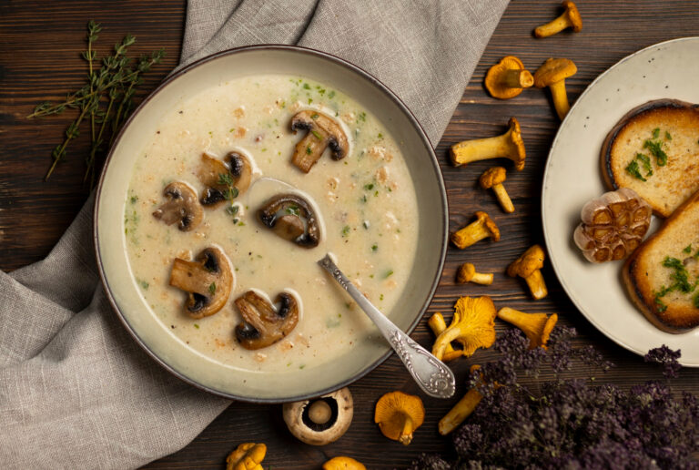

O que eles comem?
Hoje lhes trago diferentes informações novas sobre nós gnomos. Mais especificamente, sobre nossa alimentação e algumas recomendações. Nossa dieta é embasada naturalmente em diferentes pratos de cogumelos, ervas, e legumes, como cebolas, cenouras e entre outros.
A seguir vou começar a passar por alguns pratos cotidianos. Na ordem de desjejum, almoço, café da tarde e nossa querida janta.
Cogumelos com Ovos e o que tiver
Começar o dia daquele jeito.
Nada como começar comendo aquele prato com tudo que podemos encontrar de bom. Geralmente pão, cogumelos, ovos, e alguma pasta. Tudo encaixa bem se estiver nivelado a nos deixar de bom humor e prontos para começar nossos afazeres, que envolvem, bem, isto acho que cabe em outro post.
Panquecas ao molho de tomate
Uma das melhores maravilhas já criadas por gnomos.
Quando chegaram, não sairam da boca do nosso povo. Panquecas são incríveis, da para rechear com tudo que nós imaginamos. Mas a combinação perfeita continua sendo: Panquecas com molho de tomate e muito queijo. Creio que uma refeição com algumas delas possa até mesmo levar um gnomo a imortalidade, agora se isto é real, não tenho ideia.
Bolo de cenoura

Para uma tarde maravilhosa, o néctar dos gnomos precisa ser apreciado.
Um bolo de cenoura com uma calda magnífica de chocolate, como isto pode soar errado? Apenas o soar destas palavras em conjunto causa uma satisfação, um deleite nos ouvidos de todos gnomos presentes, uma perfeição imaginativa e concebida pelas mãos dos padeiros da nossa vila.
Sopa de cogumelos
Finalizar uma janta suave e clássica.
Uma sopa de cogumelos para terminar seu dia, é um clássico dos clássicos. Dizem que no início dos tempos, quando gnomos ainda eram nômades, eles se juntavam
ao redor de uma fogueira para se deliciar com uma sopinha de cogumelos coletados ao longo do dia. Mas lembre-se
Enfim, este foi meu relato sobre nosso dia a dia e nossas comidas clássicas em cada um dos momentos de nosso dia. Espero que tenha sido informativo! Leia mais posts do seu Gnomo Vermelho.